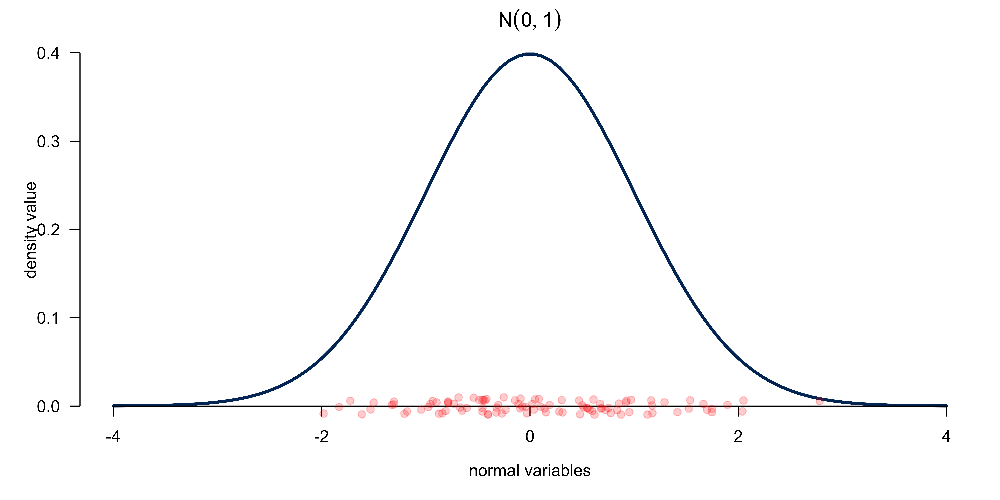
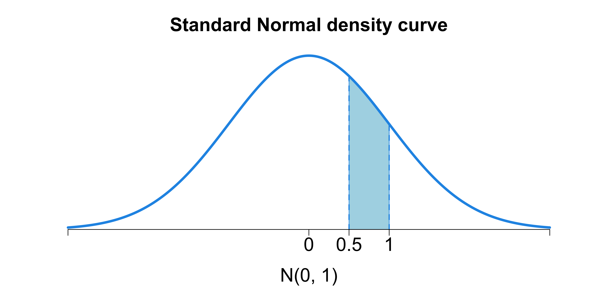
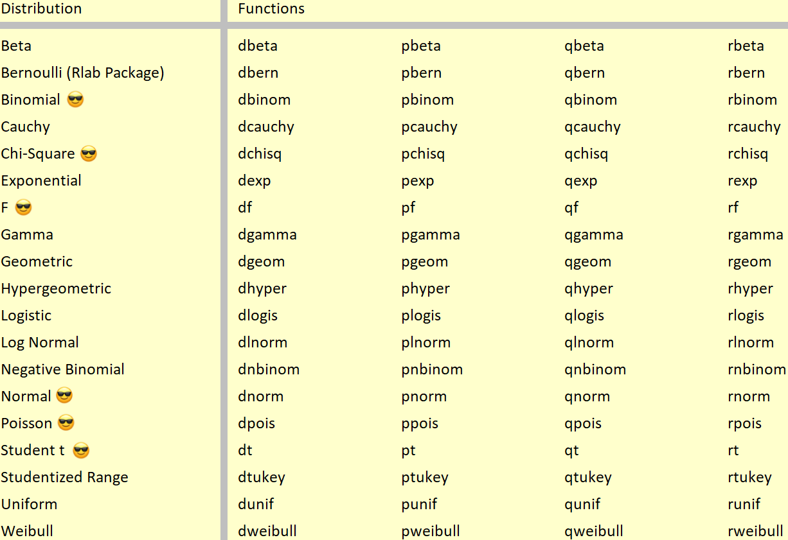
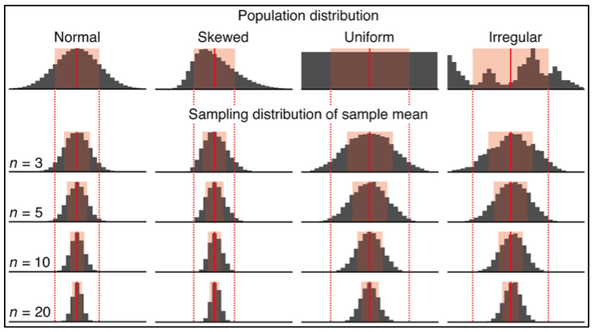

Probability and Statistics 🎲
MATH 4780/MSSC 5780 Regression Analysis
Random Variables and Probability Distributions
Discrete Random Variables
A discrete variable \(Y\) has countable possible values, e.g. \(\mathcal{Y} = \{0, 1, 2\}\)
-
Probability (mass) function (pf or pmf) \[P(Y = y) = p(y), \,\, y \in \mathcal{Y}\]
\(0 \le p(y) \le 1\) for all \(y \in \mathcal{Y}\)
\(\sum_{y \in \mathcal{Y}}p(y) = 1\)
\(P(a < Y < b) = \sum_{y: a<y<b}p(y)\)
give an example.
Give me an example of a discrete variable/distribution!
Binomial Probability Distribution
\(P(Y = y; n, \pi) = \frac{n!}{y!(n-y)!}\pi^y(1-\pi)^{n-y}, \quad y = 0, 1, 2, \dots, n\)
Poisson Probability Distribution
\(Y \sim Poisson(\lambda)\)
\(Y\) has no upper limit. The graph is truncated at \(y = 24\).

Continuous Random Variables
A continuous variable \(Y\) has infinite possible values, e.g. \(\mathcal{Y} = [0, \infty)\)
-
Probability density function (pdf) \[f(y), \,\, y \in \mathcal{Y}\]
\(f(y) \ge 0\) for all \(y \in \mathcal{Y}\)
\(\int_{\mathcal{Y}}f(y) \, dy= 1\)
\(P(a < Y < b) = \int_{a}^bf(y)\,dy\)
. . .
Give me an example of continuous variable/distribution!
Normal (Gaussian) Density Curve
For continuous variables, \(P(a < Y < b)\) is the area under the density curve between \(a\) and \(b\).

Expected Value and Variance
For a random variable \(Y\),
The expected value or mean: \(E(Y)\) or \(\mu\).
The variance: \(\mathrm{Var}(Y)\) or \(\sigma^2\); standard deviation: \(\text{SD}(Y)\) or \(\sigma\)
. . .
The mean measures the center of the distribution, or the balancing point of a seesaw.
The standard deviation measures the dispersion of a distribution, or the average distance from the mean.
. . .
Discrete \(Y\):
\[E(Y) := \sum_{y \in \mathcal{Y}}yP(Y = y)\] \[\begin{align} \mathrm{Var}(Y) &:= E\left[(Y - E(Y))^2 \right] \\&= \sum_{y \in \mathcal{Y}}(y - \mu)^2P(Y = y)\end{align}\]
Continuous \(Y\):
\[E(Y) := \int_{-\infty}^{\infty}yf(y)\, dy\] \[\begin{align} \mathrm{Var}(Y) &:= E\left[(Y - E(Y))^2 \right] \\&= \int_{-\infty}^{\infty}(y - \mu)^2f(y)\, dy \end{align}\]
The mean of a discrete random variable is the weighted average of possible values weighted by their corresponding probability.
The variance of a discrete random variable is the weighted sum of squared deviation from the mean weighted by probability values.
give an normal example
This is NOT the sample mean \(\overline{y}\) or sample variance \(s^2\).
If \(Y \sim binomial(n, \pi)\), what are the mean and variance?
R Lab dpqr Functions
For some distribution (dist),
-
d
dist(x, ...): density value \(f(x)\) or probability value \(P(X = x)\). -
p
dist(q, ...): cdf \(F(q) = P(X \le q)\). -
q
dist(p, ...): quantile of probability \(p\). -
r
dist(n, ...): generate \(n\) random numbers.
- In practice, we are not gonna calculate those properties by hand. Instead, we use computing software.
- In R we can use dpqr Functions to calculate probabilities or generate values from some distribution. Let’s see how.
. . .
R Lab dpqr Functions
## the default mean = 0 and sd = 1 (standard normal)
rnorm(5)[1] -1.920 1.262 -0.194 -0.635 -0.674. . .
- \(100\) random draws from \(N(0, 1)\)

R Lab dpqr Functions

R Lab dpqr Functions

Properties of Distributions
Sum of Normals is Normal
- If \(Y \sim N(\mu, \sigma^2)\), \(Z = \frac{Y - \mu}{\sigma} \sim N(0, 1)\).
. . .
- If \(Y_1 \sim N(\mu_1, \sigma_1^2)\) and \(Y_2 \sim N(\mu_2, \sigma_2^2)\) and \(Y_1\) and \(Y_2\) are independent. Then for \(a, b \in \mathbf{R}\), \[\textcolor{blue}{aY_1 + bY_2 \sim N\left(a\mu_1+b\mu_2, a^2\sigma_1^2 + b^2\sigma_2^2\right)}\]
. . .
- Example. \(Y_1 \sim N(1, 2)\) and \(Y_2 \sim N(2, 1)\), and \(Y_1 \perp Y_2\). Then \[2Y_1 - 3Y_2 \sim N\left(2(1) - 3(2), 2^2(2) + 3^2(1)\right) = N(-4, 17)\]
. . .
What is the distribution of \(a_1Y_1 + a_2Y_2 + \cdots + a_nY_n\) if \(Y_i \sim N(\mu_i, \sigma^2_i)\) and \(Y_i\)s are independent?
If \(Z \sim N(0, 1)\), then \[Z^2 \sim \chi^2_1\]
If \(Z_i \stackrel{iid}{\sim} N(0, 1), i = 1, 2, \dots, k\), then \[\sum_{i=1}^k Z_i^2 \sim \chi^2_k\]
\(iid\) means * independent identically distributed*.
Let \(Y_i \stackrel{indep}{\sim} N(\mu_i, \sigma_i^2), i = 1, 2, \dots, n\). Then the random variable \(U = \sum_{i=1}^n a_iY_i\) has the distribution

Conditional Distribution
The distribution of \(Y\) may depend on another variable \(X\)’s value.
\(Y \mid X \sim N\left(\mu(X), 1 \right)\)
. . .
- If \(\mu(X) = 3X\), then when \(X = 2\), \[Y \mid X = 2 \sim N\left(\mu(2), 1 \right) = N\left(6, 1 \right)\]
. . .
The location of the distribution of \(Y\), or the mean of \(Y\) changes with the value of \(X\). The conditional expectation \(E(Y\mid X) = 3X\).

Normal, Chi-Squared, Student’s-t and F
If \(Z \sim N(0, 1)\), \(V \sim \chi^2_v\) and \(Z\) and \(V\) are independent, then \[\frac{Z}{\sqrt{V/v}} \sim t_{v}\]
If \(V \sim \chi^2_v\), \(W \sim \chi^2_w\) and \(V\) and \(W\) are independent, then \[\frac{V/v}{W/w} \sim F_{v, w}\]
Statistical Inference
Learning from (observed imperfect) data
Statistics Comes In
Suppose each data point \(Y_i\) of the sample \((Y_1, Y_2, \dots, Y_n)\) is a random variable from the same population whose distribution is \(N(\mu, \sigma^2)\), and \(Y_i\)s are independent each other: \[Y_i \stackrel{iid}{\sim} N(\mu, \sigma^2), \quad i = 1, 2, \dots, n\]

The real data generating process is the finite population. The data generating process is usually assumed to be a hypothetical superpopulation represented by a probability distribution.
Statistics Comes In: Sampling Distribution
If \(Y_i \stackrel{iid}{\sim} N(\mu, \sigma^2), \quad i = 1, 2, \dots, n\), a generative model determined by \(\mu\) and \(\sigma\),
- The sampling distribution of the sample mean \(\overline{Y} \sim N\left(\mu,\frac{\sigma^2}{n} \right)\), and so \(Z = \frac{\overline{Y} - \mu}{\sigma/\sqrt{n}} \sim N(0, 1)\)
. . .
- Let the sample variance of \(Y\) be \(S^2 = \frac{\sum_{i=1}^n(Y_i - \overline{Y})^2}{n-1}\).
What is the distribution of \(\frac{\overline{Y} - \mu}{S/\sqrt{n}}\)?
. . .
- \(\frac{\overline{Y} - \mu}{S/\sqrt{n}} \sim t_{n-1}\)
. . .
What if \(Y_i\) is not from Gaussian?
. . .
- We have central limit theorem (CLT) that \(\frac{\overline{Y} - \mu}{\sigma/\sqrt{n}} \xrightarrow{d} N(0, 1)\) as \(n \rightarrow \infty\)
. . .
- Inference: \(\mu\) and \(\sigma^2\) are unknown parameters, and \(\overline{y}\) and \(s^2\) are point estimates for \(\mu\) and \(\sigma^2\), respectively.
- sampling distribution might be called probabilistic data model (generative model)
- in practice, we will not know the sampling distribution, and we can only estimate it.
Why Use Normal? Central Limit Theorem (CLT)
\(X_1, X_2, \dots, X_n\) are i.i.d. variables with mean \(\mu\) and variance \(\sigma^2 < \infty\).
As \(n\) increases, the sampling distribution of \(\overline{X}_n = \frac{\sum_{i=1}^nX_i}{n}\) looks more and more like \(N(\mu, \frac{\sigma^2}{n})\), regardless of the distribution from which we are sampling \(X_i\)!

- Alright. We know why we want large sample. You will find that we use normal distribution quite often. It is not because it is called normal or more normal than other distributions. There is a reason why we use it.
- The reason is Central Limit Theorem.
- The CLT says that Suppose is \(\overline{X}_n\) is from a random sample of size \(n\) and from a population distribution having mean \(\mu\) and finite standard deviation \(\sigma\). As \(n\) increases, the sampling distribution of \(\overline{X}_n\) looks more and more like \(N(\mu, \sigma^2/n)\), regardless of the distribution from which we are sampling!
- Look at this figure. Your population distribution can be of any shape. As long as the distribution has mean and variance, its sampling distribution of sample mean will always look like a normal distribution as long as n is large.

Standard Errors
- The standard error is the estimated standard deviation of an estimator.
- give us a sense of our uncertainty about the quantity of interest.
- The estimator \(\overline{Y}\) has the standard error \(\frac{\sigma}{\sqrt{n}}\).
- give us a sense of our uncertainty about \(\mu\).

\((1-\alpha)100\%\) Confidence Interval for \(\mu\)
Confidence interval: A range of values of a parameter that are roughly consistent with the data, given the assumed sampling distribution.
\(T = \frac{\overline{Y} - \mu}{S/\sqrt{n}} \sim t_{n-1}\)
\[\small \begin{align} & \quad \quad P\left(-t_{\frac{\alpha}{2}, n-1} < T < t_{\frac{\alpha}{2}, n-1}\right) = 1 - \alpha \\ & P\left(-t_{\frac{\alpha}{2}, n-1} < \frac{\overline{Y} - \mu}{S/\sqrt{n}} < t_{\frac{\alpha}{2}, n-1}\right) = 1 - \alpha \\ & P\left(\mu-t_{\frac{\alpha}{2}, n-1}\frac{S}{\sqrt{n}} < \overline{Y} < \mu + t_{\frac{\alpha}{2}, n-1}\frac{S}{\sqrt{n}}\right) = 1 - \alpha \end{align}\]

\((1-\alpha)100\%\) Confidence Interval for \(\mu\): Probability
\[P\left(\mu-t_{\frac{\alpha}{2}, n-1}\frac{S}{\sqrt{n}} < \overline{Y} < \mu + t_{\frac{\alpha}{2}, n-1}\frac{S}{\sqrt{n}} \right) = 1-\alpha\]
Is the interval \(\left(\mu-t_{\frac{\alpha}{2}, n-1}\frac{S}{\sqrt{n}}, \mu + t_{\frac{\alpha}{2}, n-1}\frac{S}{\sqrt{n}} \right)\) our confidence interval?

. . .
No! We don’t know \(\mu\), the quantity we’d like to estimate! But we almost there!
\((1-\alpha)100\%\) Confidence Interval for \(\mu\): Formula
\[\begin{align} &P\left(\mu-t_{\frac{\alpha}{2}, n-1}\frac{S}{\sqrt{n}} < \overline{Y} < \mu + t_{\frac{\alpha}{2}, n-1}\frac{S}{\sqrt{n}} \right) = 1-\alpha\\ &P\left( \boxed{\overline{Y}- t_{\frac{\alpha}{2}, n-1}\frac{S}{\sqrt{n}} < \mu < \overline{Y} + t_{\frac{\alpha}{2}, n-1}\frac{S}{\sqrt{n}}} \right) = 1-\alpha \end{align}\]
- With sample data of size \(n\), \(\left( \overline{y}- t_{\frac{\alpha}{2}, n-1}\frac{s}{\sqrt{n}}, \overline{y} + t_{\frac{\alpha}{2}, n-1}\frac{s}{\sqrt{n}} \right)\) is our \((1-\alpha)100\%\) CI for \(\mu\).
Hypothesis Testing
- \(H_0: \mu = \mu_0 \text{ vs. } H_1: \mu > \mu_0\), or \(\mu < \mu_0\), or \(\mu \ne \mu_0\)
- The significant level \(\alpha = P(\text{Reject } H_0 \mid H_0 \text{ is true}) = P(\text{Type I error})\)
- The test statistic is \(t_{test} = \frac{\overline{y} - \color{blue}{\mu_0}}{s/\sqrt{n}}\), a value from \(T \sim t_{n-1}\).
- When calculating a test statistic, we assume \(H_0\) is true.
. . .
Reject \(H_0\) if
| Method | Right-tailed \((H_1: \mu > \mu_0)\) | Left-tailed \((H_1: \mu < \mu_0)\) | Two-tailed \((H_1: \mu \ne \mu_0)\) |
|---|---|---|---|
| Critical value | \(t_{test} > t_{\alpha, n-1}\) | \(t_{test} < -t_{\alpha, n-1}\) | \(\mid t_{test}\mid \, > t_{\alpha/2, n-1}\) |
| \(p\)-value | \(\small P(T > t_{test} \mid H_0) < \alpha\) | \(\small P(T < t_{test} \mid H_0) < \alpha\) | \(\small 2P(T > \,\mid t_{test}\mid) \mid H_0) < \alpha\) |
Both Methods Lead to the Same Conclusion